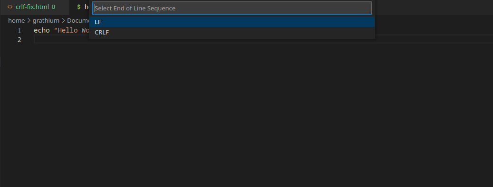

Ctrl + Shift + P > Change End of Line Sequence > LF

 Change End of Line Sequence">
'\r': command not found
When transfering a shell, or bash script from Windows to MacOS or Linux, you will get the error: '\r': command not found.
This is due to the fact that Windows uses '\r\n' to represent a new line character, while MacOS and Linux uses '\n'.
After running a script from the command line, the script will start with, and run, but show an end of line (EOL) error after each line.
$ ./script.sh
Change the end of line sequence from CRLF to LF
Ctrl + Shift + P > Change End of Line Sequence > LF
$ sed 's/\r$//' inFile.sh > outFile.sh